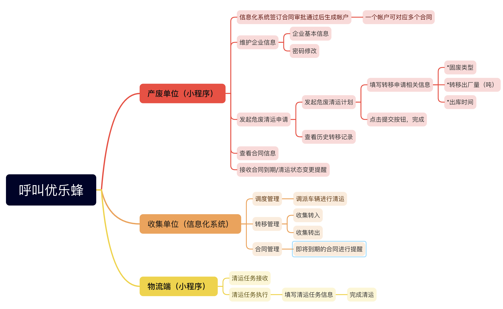

B 端小程序 · 三端协同 · 已上线
呼叫优乐蜂危废清运全链路数字化管理平台
采用「产废单位小程序 + 收集单位信息化系统 + 物流端小程序」三端协同架构，覆盖从产废企业发起清运申请、收集单位调度派车、到物流端执行清运的完整业务闭环，实现危废转移全过程的线上化、可追溯与合规化管理。
3 端协同业务闭环
1300+覆盖企业
4 态清运进度可视
合规全程可追溯
我的角色：需求梳理 · 原型设计 · UI/UX 设计 · 上线跟进
访问线上项目 ↗

— 市场痛点 —
PAIN POINTS
传统危废清运依赖电话与纸质流转的六大症结。
01 · 申请效率低
清运依赖电话/线下沟通，申请流程繁琐，信息传递易出错。
02 · 合同管理散
多份合同分散管理，到期时间难追踪，续签滞后导致清运中断。
03 · 进度不透明
申请提交后，产废企业无法实时获知派车、运输、完成状态。
04 · 调度靠人工
派车调度纯人工操作，车辆/驾驶员/押运员匹配效率低。
05 · 记录难追溯
转移记录纸质化或分散存储，合规审计时难以快速调取。
06 · 物流信息断层
运输环节与产废端、收集端信息割裂，任务反馈滞后。
— 核心功能 —
THREE-END SYNERGY
产废端
产废单位小程序
发起清运申请、选择合同、填写转移申请、存草稿；清运记录三状态查询；进度条全程可视；合同详情与附件查看；逾期续签提醒。
收集端
收集单位信息化系统
待调度列表批量派车；派车调度单（车型/车牌/驾驶员/押运员）；清运明细自动汇总；转移管理；合同到期提醒。
物流端
物流端小程序
接收收集单位派发的清运任务，现场填写清运信息，完成清运并反馈状态，闭环执行。
产品竞争优势
三端协同闭环
产废申请 → 收集调度 → 物流执行，三端数据实时打通，避免信息断层。
合同驱动清运
以合同为核心关联账户与申请，自动校验签订量与剩余清运量，从源头控制超量风险。
进度全程可视
「待派车→已派车→清运中→已完成」进度条实时呈现，消除信息黑盒。
智能派车调度
批量选择申请、统一派车，系统自动汇总清运量与物资需求。
合规可追溯
申请、转移记录、合同信息线上留存，支持审计调取，满足危废监管合规要求。
— 设计推导 —
DESIGN PROCESS

— 高保真界面 —
HI-FI SCREENS
11 张核心页面高保真设计稿，点击可放大查看。